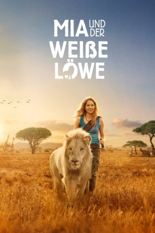

#11561 Mia und der weiße Löwe
Alternativ: Mia and the White Lion (Englischer Titel)
 
 IMDB-Wertung: 6.5 / 10
IMDB-Wertung: 6.5 / 10  Metascore: 52
Metascore: 52 
Mia ist zehn, als sie mit ihren Eltern John und Alice aus London nach Südafrika umzieht, wo sie fortan eine Löwenzucht führen sollen. Doch Mia kann sich mit dem Leben in Afrika nicht anfreunden, weil sie ihre Heimat und ihre Freunde vermisst. Das ändert sich erst, als ihr Vater ihr den weißen Löwen Charlie anvertraut, der auf der Großkatzenfarm ihrer Eltern zur Welt gekommen ist. Drei Jahre lang wachsen sie Seite an Seite auf, doch dann gerät Charlie in Not, denn er ist mittlerweile zu einem ausgewachsenen Löwen geworden und stellt für die Touristen, die die Farm besuchen, eine Gefahr dar. Als sie von den Plänen ihres Vaters Wind kriegt, der Charlie verkaufen möchte, entschließt sich Mia, mit ihrem Freund quer durch das Land in ein Schutzreservat zu fliehen, um ihn in Sicherheit zu bringen ...
Jahr: 2018
Dauer: 98 Minuten
FSK: 6
Land: Frankreich Studio: StudioCanalTonspuren: DTS - ,
Untertitel: Deutsch,
Auflösung: 1080p (1920x808) Größe: 6420 MB
Genre: Drama, Abenteuer, Familie
Regisseur: Gilles de Maistre
Drehbuch: Prune de Maistre, William Davies, Prune de Maistre, Gilles de Maistre, Jean-Paul Husson
Soundtrack: Armand Amar
Darsteller:
- Daniah De Villiers als Mia Owen
 Mélanie Laurent als Alice Owen
Mélanie Laurent als Alice Owen Langley Kirkwood als John Owen
Langley Kirkwood als John Owen Brandon Auret als Dirk
Brandon Auret als Dirk- Jurgen Hellberg als Dirk's Hunter
- Tessa Jubber als Enclosure Hunter
- Ryan Mac Lennan als Mick Owen
- Thor als Charlie
- Lionel Newton als Kevin
- Lillian Dube als Jodie
- Elvis als Trevor
- Benjamin Garrad als Daniel
- Andrew Stock als Theuns
- Lebohang Elephant als Piet
- Ashleigh Harvey als School Teacher
- David Clatworthy als Mr. Kruger - School Principal
- Craig Wainwright als Football Coach
- Sthandiwe Radebe als Policewoman
- Francis Rangoajane als Police Captain
- Paul Davies als Helicopter Sniper
- Chris April als Chaman
- Sisekho Velelo als Gas Station Employee
- Michelle Coetzee als Farm Voluntary
- Chanté Jantjies als TV Journalist
- Pierre De Villiers als Mall Passerby 1
- Charne Vorster als Mall Passerby 2
- Kaelin Wills als Farmer's Son
- Owen Peacock als Baby Mick
- Ian Roberts als John' Father
- Tumelo Thema als Kid at Mall
- Noko 'Flow' Mabitsela als Tourist
Datei: X:\2018(G-M)\Mia und der weiße Löwe (2018, FSK6, 1920x808).mkv seit 27.07.2019
Festplatte: HD 2018(G-Z)-2019(A-Z)
 Es gibt insgesamt 138 Filme in der Gruppe '2018(G-M)'
Es gibt insgesamt 138 Filme in der Gruppe '2018(G-M)'